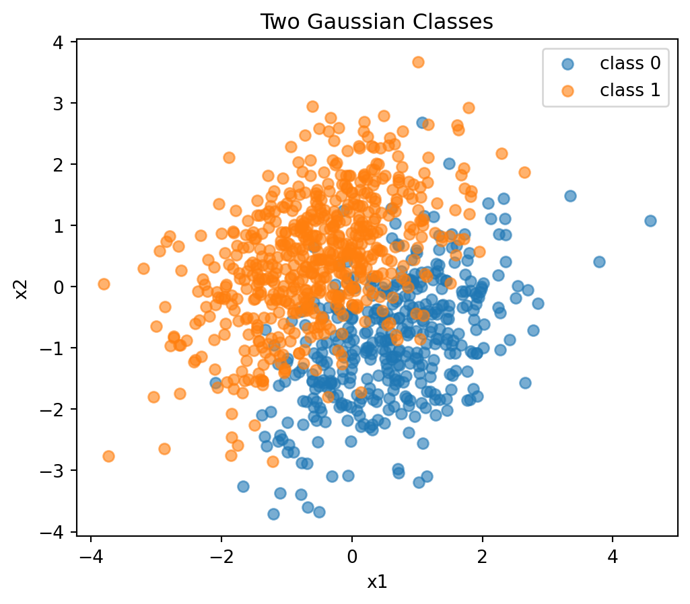
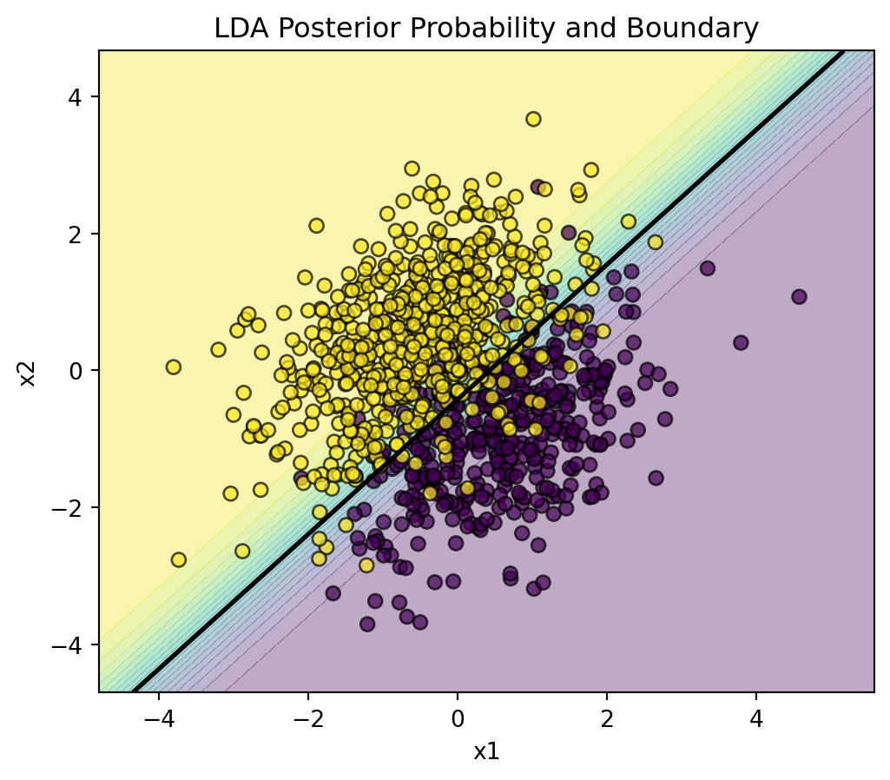
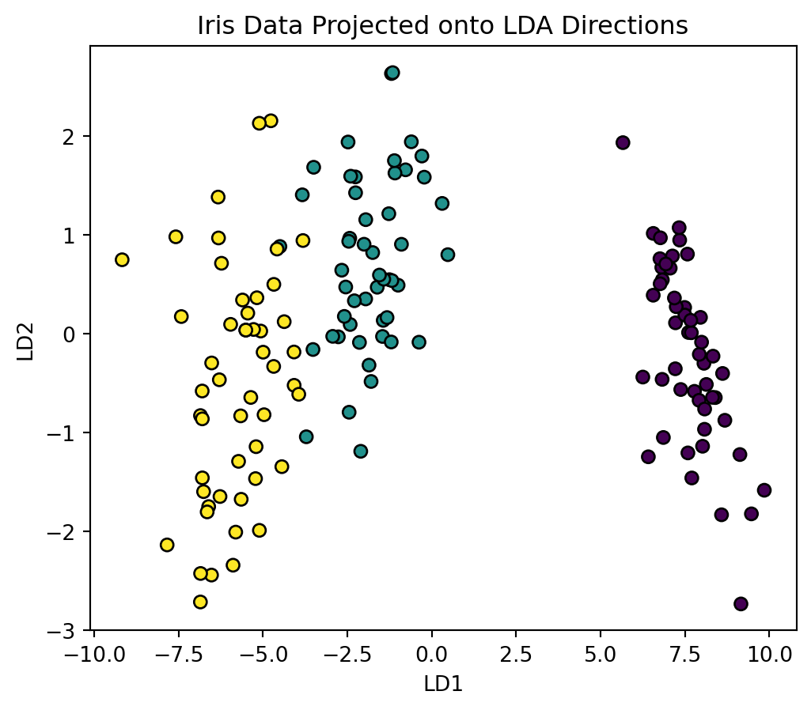

import numpy as np
import matplotlib.pyplot as plt
from sklearn.discriminant_analysis import LinearDiscriminantAnalysis
from sklearn.model_selection import train_test_split
from sklearn.metrics import accuracy_score, confusion_matrix
rng = np.random.default_rng(1)
n1 = 400
n2 = 600
mu1 = np.array([0.5, -1.0])
mu2 = np.array([-0.5, 0.5])
Sigma = np.array(
[
[1.0, 0.5],
[0.5, 1.0],
]
)
X1 = rng.multivariate_normal(mu1, Sigma, size=n1)
X2 = rng.multivariate_normal(mu2, Sigma, size=n2)
X = np.vstack([X1, X2])
y = np.repeat([0, 1], [n1, n2])8 Linear Discriminant Analysis
\[ \require{physics} \require{braket} \]
\[ \newcommand{\dl}[1]{{\hspace{#1mu}\mathrm d}} \newcommand{\me}{{\mathrm e}} % \newcommand{\argmin}{\operatorname{argmin}} \newcommand{\rss}{\mathrm{RSS}} \newcommand{\ols}{\mathrm{OLS}} \newcommand{\ridge}{\mathrm{ridge}} \newcommand{\lasso}{\mathrm{lasso}} \newcommand{\mle}{\mathrm{MLE}} \newcommand{\constant}{\mathrm{constant}} \newcommand{\resid}{\mathrm{residual}} \newcommand{\span}{\mathrm{span}} \newcommand{\gini}{\mathrm{Gini}} \]
$$
$$
\[ \newcommand{\pdfbinom}{{\tt binom}} \newcommand{\pdfbeta}{{\tt beta}} \newcommand{\pdfpois}{{\tt poisson}} \newcommand{\pdfgamma}{{\tt gamma}} \newcommand{\pdfnormal}{{\tt norm}} \newcommand{\pdfexp}{{\tt expon}} \]
\[ \newcommand{\distbinom}{\operatorname{B}} \newcommand{\distbeta}{\operatorname{Beta}} \newcommand{\distgamma}{\operatorname{Gamma}} \newcommand{\distexp}{\operatorname{Exp}} \newcommand{\distpois}{\operatorname{Poisson}} \newcommand{\distnormal}{\operatorname{\mathcal N}} \]
Linear discriminant analysis (LDA) is a classification method based on modeling the distribution of the predictors within each class.
Logistic regression directly models
\[ \Prob(Y=k\mid X=x). \]
LDA instead models
\[ f_k(x)=\text{density of }X\mid Y=k \]
and then uses Bayes’ theorem to compute posterior class probabilities.
NoteGenerative and discriminative methods
LDA is a generative classifier because it models how the predictors are generated within each class.
Logistic regression is a discriminative classifier because it directly models the conditional class probability.
8.1 Bayes Classifier
Suppose there are \(K\) classes:
\[ Y\in\{1,\ldots,K\}. \]
Let
\[ \pi_k=\Prob(Y=k) \]
be the prior probability of class \(k\), and let
\[ f_k(x) \]
be the density of \(X\) in class \(k\).
By Bayes’ theorem,
\[ \Prob(Y=k\mid X=x) = \frac{ \pi_k f_k(x) }{ \sum_{\ell=1}^K \pi_\ell f_\ell(x) }. \]
The Bayes classifier assigns \(x\) to the class with the largest posterior probability:
\[ \hat G(x) = \argmax_k \Prob(Y=k\mid X=x). \]
Since the denominator is the same for all classes, this is equivalent to
\[ \hat G(x) = \argmax_k \pi_k f_k(x). \]
8.2 Gaussian Class Densities
LDA assumes that the class-conditional densities are multivariate normal:
\[ X\mid Y=k \sim N(\mu_k,\Sigma). \]
The class means \(\mu_k\) are allowed to differ across classes, but the covariance matrix \(\Sigma\) is shared across classes.
The multivariate normal density is
\[ f_k(x) = \frac{1}{(2\pi)^{p/2}|\Sigma|^{1/2}} \exp\left\{ -\frac12 (x-\mu_k)^\top\Sigma^{-1}(x-\mu_k) \right\}. \]
Taking the log of \(\pi_k f_k(x)\) and dropping terms that do not depend on \(k\) gives the LDA discriminant score:
\[ \delta_k(x) = x^\top\Sigma^{-1}\mu_k - \frac12\mu_k^\top\Sigma^{-1}\mu_k + \log \pi_k. \]
The LDA classifier is
\[ \hat G(x) = \argmax_k \delta_k(x). \]
NoteWhy the boundary is linear
The discriminant score \(\delta_k(x)\) is linear in \(x\). Therefore the decision boundary between any two classes is linear.
8.3 Two-Class Decision Boundary
For two classes, the decision boundary is the set of points where
\[ \delta_1(x)=\delta_2(x). \]
Because each \(\delta_k(x)\) is linear in \(x\), the boundary is a line in two dimensions, a plane in three dimensions, and a hyperplane in higher dimensions.
The prior probabilities shift the boundary. A class with larger prior probability gets a larger \(\log\pi_k\) term, so the classifier requires less evidence from the predictors to choose that class.
8.4 Parameter Estimation
In practice, \(\pi_k\), \(\mu_k\), and \(\Sigma\) are unknown.
They are estimated from training data:
\[ \hat\pi_k = \frac{n_k}{n}, \]
where \(n_k\) is the number of observations in class \(k\).
The class mean is estimated by
\[ \hat\mu_k = \frac{1}{n_k} \sum_{i:y_i=k}x_i. \]
The shared covariance matrix is estimated by pooling within-class covariance:
\[ \hat\Sigma = \frac{1}{n-K} \sum_{k=1}^K \sum_{i:y_i=k} (x_i-\hat\mu_k)(x_i-\hat\mu_k)^\top. \]
This pooling is the key modeling assumption behind LDA.
8.5 Simulated Example
We first simulate two classes from normal distributions with the same covariance matrix.
Plot the data.
plt.figure(figsize=(6, 5))
plt.scatter(X1[:, 0], X1[:, 1], alpha=0.6, label="class 0")
plt.scatter(X2[:, 0], X2[:, 1], alpha=0.6, label="class 1")
plt.xlabel("x1")
plt.ylabel("x2")
plt.title("Two Gaussian Classes")
plt.legend()
plt.show()
Fit LDA.
lda = LinearDiscriminantAnalysis()
lda.fit(X, y)
lda.priors_array([0.4, 0.6])The estimated class means are:
lda.means_array([[ 0.61151605, -0.90694679],
[-0.54023734, 0.45958622]])Predict class labels and posterior probabilities.
y_pred = lda.predict(X)
y_prob = lda.predict_proba(X)
accuracy_score(y, y_pred)0.911The first few posterior probabilities are:
y_prob[:5]array([[0.65302376, 0.34697624],
[0.9970083 , 0.0029917 ],
[0.82699842, 0.17300158],
[0.76677355, 0.23322645],
[0.87193628, 0.12806372]])Each row gives the estimated posterior probabilities for the two classes.
8.6 Visualizing the LDA Boundary
x0_min, x0_max = X[:, 0].min() - 1, X[:, 0].max() + 1
x1_min, x1_max = X[:, 1].min() - 1, X[:, 1].max() + 1
xx0, xx1 = np.meshgrid(
np.linspace(x0_min, x0_max, 300),
np.linspace(x1_min, x1_max, 300),
)
grid_points = np.c_[xx0.ravel(), xx1.ravel()]
zz = lda.predict_proba(grid_points)[:, 1].reshape(xx0.shape)
plt.figure(figsize=(6, 5))
plt.contourf(xx0, xx1, zz, levels=20, alpha=0.35)
plt.contour(xx0, xx1, zz, levels=[0.5], colors="black", linewidths=2)
plt.scatter(X[:, 0], X[:, 1], c=y, edgecolor="k", alpha=0.7)
plt.xlabel("x1")
plt.ylabel("x2")
plt.title("LDA Posterior Probability and Boundary")
plt.show()
The black line is the set of points where the two posterior probabilities are equal.
8.7 LDA as Dimension Reduction
LDA can also be viewed as a supervised dimension reduction method. It finds directions that separate class means relative to within-class variation.
For two classes, there is only one discriminant direction. For \(K\) classes, the number of discriminant directions is at most
\[ K-1. \]
In sklearn, .transform() projects the data onto the discriminant directions.
from sklearn.datasets import load_iris
iris = load_iris(as_frame=True)
X_iris = iris.data
y_iris = iris.target
lda_iris = LinearDiscriminantAnalysis()
X_lda = lda_iris.fit_transform(X_iris, y_iris)
X_lda.shape(150, 2)The iris data have three classes, so LDA produces at most two discriminant directions.
plt.figure(figsize=(6, 5))
plt.scatter(X_lda[:, 0], X_lda[:, 1], c=y_iris, edgecolor="k")
plt.xlabel("LD1")
plt.ylabel("LD2")
plt.title("Iris Data Projected onto LDA Directions")
plt.show()
8.8 LDA in a Train-Test Workflow
Now use LDA as a classifier on the iris data.
X_train, X_test, y_train, y_test = train_test_split(
X_iris,
y_iris,
test_size=0.3,
stratify=y_iris,
random_state=1,
)
lda = LinearDiscriminantAnalysis()
lda.fit(X_train, y_train)
pred = lda.predict(X_test)
prob = lda.predict_proba(X_test)
accuracy_score(y_test, pred)1.0The confusion matrix is:
confusion_matrix(y_test, pred)array([[15, 0, 0],
[ 0, 15, 0],
[ 0, 0, 15]])8.9 Priors
By default, sklearn estimates class priors from the training data. Priors can also be specified manually.
lda_equal = LinearDiscriminantAnalysis(priors=[1/3, 1/3, 1/3])
lda_equal.fit(X_train, y_train)
lda_equal.priors_array([0.33333333, 0.33333333, 0.33333333])Changing priors changes the classification rule because the discriminant score includes \(\log\pi_k\).
This can matter when:
- the training sample class proportions do not match the population proportions;
- one class is much more important to detect;
- the data were collected using case-control sampling.
8.10 LDA versus QDA
Quadratic discriminant analysis (QDA) relaxes the shared covariance assumption.
LDA assumes
\[ X\mid Y=k\sim N(\mu_k,\Sigma). \]
QDA assumes
\[ X\mid Y=k\sim N(\mu_k,\Sigma_k). \]
Since QDA estimates a different covariance matrix for every class, its discriminant score contains class-specific quadratic terms. The decision boundaries are generally quadratic rather than linear.
| Method | Covariance assumption | Boundary | Flexibility |
|---|---|---|---|
| LDA | common \(\Sigma\) | linear | lower |
| QDA | class-specific \(\Sigma_k\) | quadratic | higher |
QDA is more flexible but estimates more parameters. It can work better when classes have clearly different covariance structures, but it may overfit when the sample size is small.
from sklearn.discriminant_analysis import QuadraticDiscriminantAnalysis
from sklearn.model_selection import cross_val_score
lda = LinearDiscriminantAnalysis()
qda = QuadraticDiscriminantAnalysis()
lda_scores = cross_val_score(lda, X_iris, y_iris, cv=5, scoring="accuracy")
qda_scores = cross_val_score(qda, X_iris, y_iris, cv=5, scoring="accuracy")
print("LDA mean accuracy:", lda_scores.mean())
print("QDA mean accuracy:", qda_scores.mean())LDA mean accuracy: 0.9800000000000001
QDA mean accuracy: 0.98000000000000018.11 Regularized LDA
When there are many predictors or strong collinearity, the sample covariance matrix can be unstable. Regularized LDA shrinks the covariance estimate.
In sklearn, this can be done with the lsqr or eigen solver and the shrinkage argument.
lda_shrink = LinearDiscriminantAnalysis(
solver="lsqr",
shrinkage="auto",
)
lda_shrink_scores = cross_val_score(
lda_shrink,
X_iris,
y_iris,
cv=5,
scoring="accuracy",
)
lda_shrink_scores.mean()np.float64(0.9800000000000001)Shrinkage is especially useful when \(p\) is large relative to \(n\).
8.12 Assumptions and Practical Notes
LDA works best when:
- each class is roughly Gaussian;
- class covariance matrices are similar;
- the number of observations is large enough to estimate covariance reliably;
- the decision boundary is approximately linear.
In practice, LDA can still perform well even when the Gaussian assumption is not exactly true. The shared covariance assumption is often more important for the linear boundary.
Feature scaling is not usually required for LDA in the same way it is required for KNN, because the covariance matrix accounts for feature scale. However, scaling may still be useful for numerical stability or when LDA is combined with other preprocessing steps.
8.13 Comparison with Logistic Regression
Both LDA and logistic regression can produce linear decision boundaries.
Important differences:
- Logistic regression models \(\Prob(Y=k\mid X=x)\) directly.
- LDA models \(X\mid Y=k\) and uses Bayes’ theorem.
- Logistic regression does not require normal class densities.
- LDA can be more efficient when the Gaussian assumptions are reasonable.
- LDA naturally gives a supervised low-dimensional projection.
For two classes, LDA and logistic regression often give similar boundaries, especially when the class distributions are close to Gaussian with common covariance.
8.14 Summary
LDA:
- is a generative classification method;
- models each class density as multivariate normal;
- assumes a common covariance matrix across classes;
- uses Bayes’ theorem to compute posterior class probabilities;
- has linear decision boundaries;
- can also be used for supervised dimension reduction;
- can be regularized through covariance shrinkage.
QDA removes the common covariance assumption and gives more flexible, quadratic boundaries, at the cost of estimating more parameters.